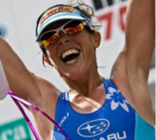
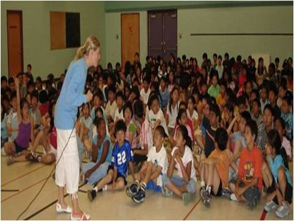
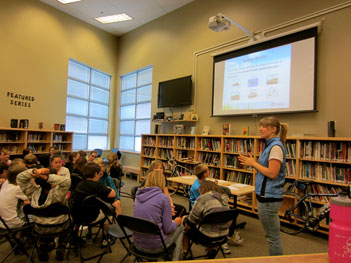

Tools Used
Initiated By
Clean Air Champions
Partners
- HSBC Bank Canada
Results
- During the 2011-12 school year: 3,230 students from 87 schools took part
- 30.6% reduction in greenhouse gas emissions
- 45.2% increase in active transportation
- 57.7% of families used their cars less
Case Study PDF
Webinar Transcript
Landmark Case Study
HSBC Clean Air Achievers
CAC's HSBC Clean Air Achievers programs provides youth with a chance to meet high profile athletes and be inspired by personal messages to adopt healthier, more active and sustainable lifestyles. The program has dual goals of reducing air pollution and increasing physical activity levels via active transportation. Designated a Landmark case study in 2013.
Background
Note: To minimize site maintenance costs, all Tools of Change case studies are written in the past tense, even if they are ongoing programs, as is the case with this one.
HSBC Clean Air Achievers was delivered through Clean Air Champions (CAC), a national charity formed in 2001. Its mission was to educate Canadians on the importance of air quality and its connections to health. CAC worked with some of Canada’s most respected athletes (the Champions) to educate and inspire people to adopt healthier, more active and sustainable lifestyles.

CAC was founded by three members, each of whom had extensive education and long careers in the sports and environment fields. CAC offered three main programs, all of which were connected to the curriculum for Grades 5 through 12. Its longest running program, the HSBC Clean Air Achievers was offered free to Grades 5 to 9; the other two programs were fee-based.
At the heart of all of the CAC's programs were the Champions. More than 200 Olympic, Paralympic and National Team athletes acted as educators, program ambassadors and motivational speakers, relating stories about their own health and well-being. Every Champion was also passionate about CAC's dual goals of improving the environment and the health of Canadians and their stories helped engage and motivate their audiences.

Lisa Bentley was a Clean Air Champion and Ironman triathlete who suffered from asthma, allergies and cystic fibrosis, and relied on the national Air Quality Health Index to know when it was safe for her to be active.
Setting Objectives
The program had two goals: produce fewer GHGs through reduced reliance on the automobile, and enhance fitness levels by choosing active modes of transportation.
Schools engaged in the program were asked to target a
- 15% reduction in GHGs (measured in CO2) and a
- 15% increase in active transportation (measured in kilometres).
Getting Informed
CAC's initial research indicated that the optimum audience for the program was youth between Grades 5 and 9 (aged 10 to 15). Youth in this age range were most easily influenced to adopt new travel behaviours. The younger ones were beginning to have independence in their lives, especially in their travel and buying habits. The older ones were on the verge of becoming licensed car drivers.
Existing curriculum activities could not be found that integrated environment, health and physical activity. CAC therefore brought in curriculum consultants on climate, physical activity and health issues, and then created the program's activities. "We put in some really unique things that we haven’t seen anywhere else and that teachers continue to use today," said Ms. LaFramboise.
CAC evolved the program over three years of pilot testing with different approaches and different grade levels (Grades 4 to 11), and with comprehensive evaluation via surveys, focus groups, one-on-one interviews with teachers, youth, and the Champions.
Delivering the Program
HSBC Clean Air Achievers was a bilingual, curriculum-connected program delivered in the classroom. It aimed to educate youth to choose more sustainable and healthier travel options. (School Programs that Influence the Home)
Champion athletes—identified as positive and inspirational role models—were trained to deliver the program. They were recruited from a network of over 200 Olympic, Paralympic and National Team athletes. These athletes shared CAC's values of and commitments to active living and active transportation, and many carried a dedication to environmental preservation as they spent their time training in outdoor environments. Many of them also cycled or used other forms of sustainable transportation to get to their presentations.
More than 30% of the Champions suffered from asthma, exercise-induced asthma and/or allergies, and could speak from experience about how clean air impacted their health. For example, Andrew Haley, a Paralympics swimmer, was a cancer survivor. He had lost part of his leg and a lung. "When Andrew speaks about air pollution impacting him," said Deirdre LaFramboise, CAC’s Executive Director, "he speaks very passionately about the topic."
The Champions began each presentation with an inspirational orientation session that included a multi-media presentation, and were available to communicate with the students throughout implementation. Many of the Champions integrated their personal experiences and values into their presentations. (Vivid, personalized, credible, empowering communication)

Supporting the Champions’ presentation were a number of resources, including backgrounders, games, and curriculum-connected activities that provided both theoretical and practical learning experiences. (Building Motivation over Time)
At the centre of the program was the Trip Tracker, a website that recorded students' travel trips and quantified the amount of GHGs by mode of travel. Each trip entered by a student gave the total kilometres traveled and the total GHGs (in carbon dioxide) that would be reduced if the student chose to change their travel behaviours. (Feedback)
The online component was directly linked to a Teachers Manual of additional activities and lessons on the themes of air quality, health, active transportation, goal setting and healthy lifestyle choices. (Vivid, personalized, credible, empowering communication)
At the end of each presentation, classes were invited to join the annual Champions Challenge for a chance to win $1,000 to go towards a green initiative at their school and to participate in a sporting event with two Clean Air Champions. First prize went to the class–or school if the entire school decided to participate–that had the year's best Trip Tracker results and the most participants. Second and third place prizes were both $500. (Building motivation over time, Challenges, Incentives)
In some cases, the Champion was invited back for a second visit. "The first visit is more about the message and the second one is more celebratory, to reinforce the message," said Ms. LaFramboise. "The Champions come back and discuss with the kids what their challenges were; it's more of a dialogue than a presentation."
The program was delivered in all 10 Canadian provinces in both English and French. CAC adapted the program for geographic variances or socio-economic disparities by allowing each student to work towards personal goals.

Crystal Phillips in a classroom
Financing the Program
HSBC Bank Canada donated more than $550,000 to the HSBC Clean Air Achievers program from 2006 to 2013.
CAC also had partnerships with Honda, the Government of Canada and CN (Canadian National).
Measuring Achievements
CAC used the Trip Tracker as its primary method of monitoring the impact of the program. Reports produced by the Trip Tracker were available to students and teachers as well as CAC staff.
Students entered their travel trips (unlimited in number) using a Google locator tool and drop-down selection of their mode of travel (car, hybrid car, truck/van/SUV, bus, subway, walking, cycling, skateboarding and rollerblading). The online tool allowed them to select regular travel trips taken in the past (for example, between school and home) and to easily record subsequent trips by simply selecting the new (or same) mode of travel.
The Trip Tracker calculated the total distance travelled per mode of travel, the “old” emissions in kilograms (i.e. when using the usual mode of travel in the past), the “new” emissions (i.e. when using the more active or sustainable mode of travel), and the difference in kilograms of emissions between the travel modes. It also calculated the percentage of GHG reduction and the percentage of active transportation. All data were tracked for each participant and/or for the class or school as a whole. The program’s overall impact was measured by compiling all of the data at the end of each school year.
CAC also conducted surveys after every Champion presentation and conducted one-on-one interviews with select teachers and Champions. In addition, an exit survey conducted at the end of the school year addressed the overall program attributes and tools and resources as well as the role of the Champion.
Each year all data were put into a summary report of the impact youth had had on the environment and their transportation for that year. The report included anecdotes and quotes from teachers, Champions and youth participants.
Due to the fact that the data were specific to the Trip Tracker participation in the program, CAC knew that there were no changes caused by non-program influences.
Each year CAC reviewed the program evaluation results and took time over the summer months to make enhancements and improvements as needed.
Feedback
At the centre of the program was the Trip Tracker, a website that recorded students' travel trips and quantified the amount of GHGs by mode of travel. Each trip entered by a student gave the total kilometres traveled and the total GHGs (in carbon dioxide) that would be reduced if the student chose to change their travel behaviours.

Results
Year after year, HSBC Clean Air Achievers consistently met its goals to attain a minimum 15% decrease in GHGs (measured in CO2) and a 15% increase in students' active transportation (measured in kilometres).
Between 2006 and 2013 the program impacts were similar from year to year. The average results for the 2011-2012 school year were a
- 30.6% reduction in greenhouse gas emissions, a
- 45.2% increase in active transportation, with more than 25,000 kilometres traveled by active transportation, and
- 3,230 youth from 87 schools taking part in the program.
The average survey return rates for the Champions was100%, while teachers averaged an 80% return rate. Students were more difficult to reach (with return rates between 4% and 9%) as CAC had to go through the teachers. Survey results from that year also revealed that:
- 73% said they were going to try to travel more by active modes of transportation.
- 57.7% of families used the car less after participating in the program.
- 68% of participants strongly liked the program.
Qualitative feedback provided additional evidence of the program’s impact and value. For example, Ms. Laframboise reported that the program reached well beyond its target audience. "We know we are having some impact on families, from the feedback we get from students telling us how their parents were engaged in the challenge."
One Grade 6 student put it this way: “I liked it because it was fun to walk more. Also because, it felt good to help the environment. Also, it was good for my health. Also because my dad walked with me and I helped him get healthier too. Last but not least, it was funner [sic] to walk to school than drive.”
Teachers reported that the program was easy to implement and provided students with concrete goals on how to lessen their impact on the environment. "Having a Champion come into the classroom was a fantastic motivator," said one teacher. "The program runs like a clock and fit seamlessly into our regular programming. The kids loved it, the parents were impressed, and it made me look like a star."
Contacts
Joséphine Hénault
Program Manager
Clean Air Champions josephine@cleanairchampions.ca
www.cleanairchampions.ca / www.championsdelairpur.ca
Notes
Lessons Learned
Get staff on side
Laframboise said that the program was about relationships. "The school system is a challenge in itself, it's not easy to get in and reach teachers, so we learned pretty quickly that we needed to have school board staff on side, the curriculum experts who supported the program, and principals."
Teacher support is key
Teachers were central to the success or failure of the program. "If teachers weren't behind the program endorsing it, it would not sustain," said Ms. LaFramboise. "We listen to what they say, every year, review the evaluations, and make the changes we need to."
Landmark Designation
The program described in this case study was designated in 2013.
Designation as a Landmark (best practice) case study through our peer selection process recognizes programs and social marketing approaches considered to be among the most successful in the world. They are nominated through an open nomination process and by our peer-selection panels and Tools of Change staff, and then scored by the selection panels based on impact, innovation, replicability and adaptability.
The panel that designated this program consisted of:
- Mark Dessauer, Blue Cross Blue Shield of NC Foundation
- Jacky Kennedy, Green Communities Canada
- Ryan Lanyon, City of Toronto
- Nathalie Lapointe, Federation of Canadian Municipalities
- Patricia Lucy, Translink
- David Levinger, Mobility Education Foundation
- Geoff Noxon, Noxon Associates
- Chuck Wilsker, U.S. Telework Coalition
- Phil Winters, CUTR and the University of South Florida
This case study was written in 2014 by Jay Kassirer and Sharon Boddy.